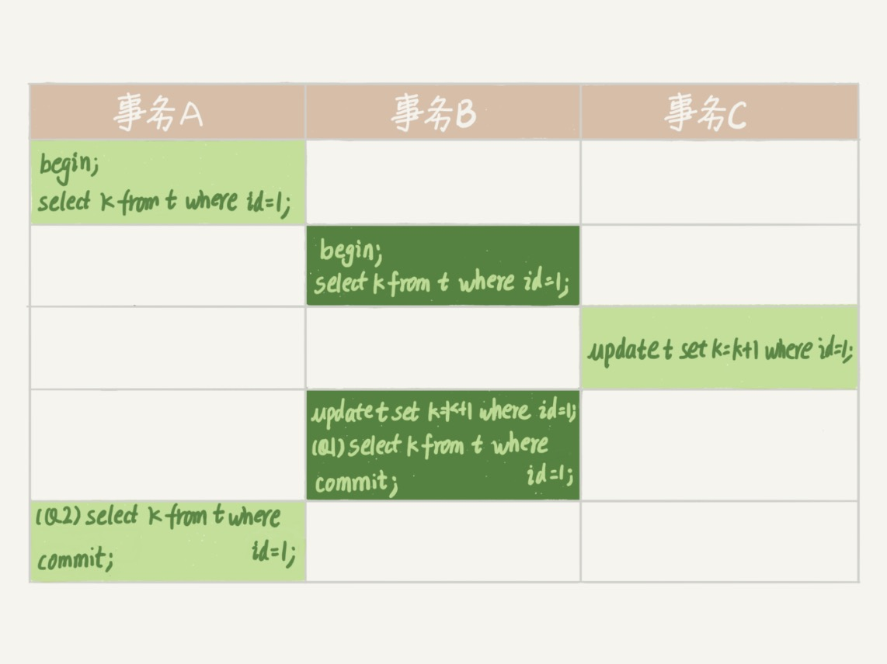
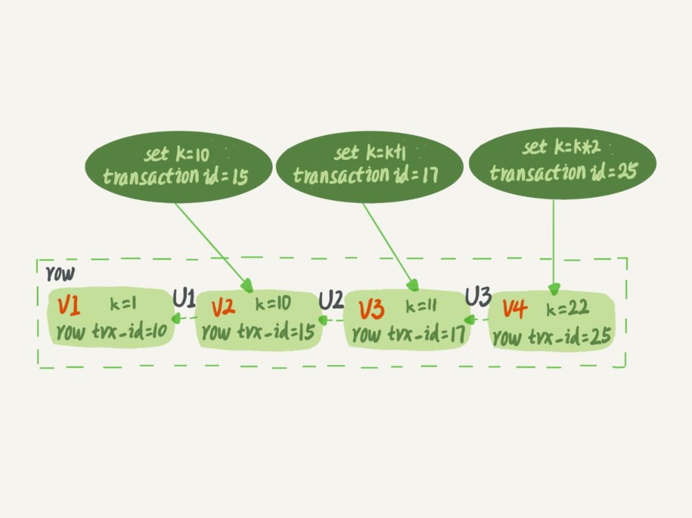

我在第 3 篇文章和你讲事务隔离级别的时候提到过，如果是可重复读隔离级别，事务 T 启动的时候会创建一个视图 read-view，之后事务 T 执行期间，即使有其他事务修改了数据，这个事务看到的仍然跟在启动时看到的一样。也就是说，一个在可重复读隔离级别下执行的事务，好像与世无争，不受外界影响。
但是，我在上一篇文章中，和你分享行锁的时候又提到，一个事务如果要更新一行，而刚好有另外一个事务拥有这一行的行锁，它又不能这么超然了，会被锁住，进入等待状态。问题是，既然进入了等待状态，那么等到这个事务自己获取到行锁要更新数据的时候，它读到的值又是什么呢？
我给你举一个例子吧。下面是一个只有两行的表的初始化语句。
mysql> CREATE TABLE `t` (
`id` int(11) NOT NULL,
`k` int(11) DEFAULT NULL,
PRIMARY KEY (`id`)
) ENGINE=InnoDB;
insert into t(id, k) values(1,1),(2,2);

这里需要特别注意的是，在整个专栏里面，我们的例子中如果没有特别说明，都是默认 autocommit=1 的。
在这个例子中，事务 C 没有显式地使用 begin/commit，表示这个 update 语句本身就是一个事务，语句完成的时候会自动提交。语句 Q1 在事务 B 中，更新了行之后查询 ; Q2 在只读事务 A 中查询，并且时间顺序上是在 Q1 的后面。
这时，如果我告诉你语句 Q1 返回的 k 的值是 3，而语句 Q2 返回的 k 的值是 1，你是不是感觉有点晕呢？
所以，今天这篇文章，我其实就是想和你说明白这个问题，希望借由把这个疑惑解开的过程，能够帮助你对 InnoDB 的事务和锁有更进一步的理解。
在 MySQL 里，有两个“视图”的概念
view，它是一个用查询语句定义的虚拟表，在调用的时候执行查询语句并生成结果。创建视图的语法是 create view，而它的查询方法与表一样。
InnoDB 在实现 MVCC 时用到的一致性读视图，即 consistent read view，用于支持 RC（Read Committed，读提交）和 RR（Repeatable Read，可重复度）隔离级别的实现。
它没有物理结构，用来在事务执行期间定义“我能看到什么数据”。
在第 3 篇文章《事务隔离：为什么你改了我还看不见？》中，我跟你解释过一遍 MVCC 的实现逻辑。今天为了说明查询和更新的区别，我换一个方式来说明，把 read view 拆开。你可以结合这两篇文章的说明来更深一步地理解 MVCC。
“快照”在 MVCC 里是怎么工作的？
在可重复读隔离级别下，事务在启动的时候就“拍了个快照”。注意，这个快照是基于整库的。
这时，你会说这看上去不太现实啊。如果一个库有 100G，那么我启动一个事务，MySQL 就要拷贝 100G 的数据出来，这个过程得多慢啊。可是，我平时的事务执行起来很快啊。
实际上，我们并不需要拷贝出这 100G 的数据，我们先来看看这个快照是怎么实现的。
InnoDB 里面每个事务有一个唯一的事务 ID，叫作 transaction id。它是在事务开始的时候向 InnoDB 的事务系统申请的，是按申请顺序严格递增的。
而每行数据也都是有多个版本的。每次事务更新数据的时候，都会生成一个新的数据版本，并且把 transaction id 赋值给这个数据版本的事务 ID，记为 row trx_id。同时，旧的数据版本要保留，并且在新的数据版本中，能够有信息可以直接拿到它。
也就是说，数据表中的一行记录，其实可能有多个版本 (row), 每个版本有自己的 row trx_id。
如图 2 所示，就是一个记录被多个事务连续更新后的状态。

图中虚线框里是同一行数据的 4 个版本，当前最新版本是 V4，k 的值是 22，它是被 transaction id 为 25 的事务更新的，因此它的 row trx_id 也是 25。
你可能会问，前面的文章不是说，语句更新会生成 undo log（回滚日志）吗？那么，undo log 在哪呢？
实际上，图 2 中的三个虚线箭头，就是 undo log；而 V1、V2、V3 并不是物理上真实存在的，而是每次需要的时候根据当前版本和 undo log 计算出来的。比如，需要 V2 的时候，就是通过 V4 执行 U3、U2 算出来。
明白了多版本和 row trx_id 的概念后，我们再来想一下，InnoDB 是怎么定义那个“100G”的快照的。
按照可重复读的定义，一个事务启动的时候，能够看到所有已经提交的事务结果。但是之后，这个事务执行期间，其他事务的更新对它不可见。
因此，InnoDB 代码实现上，一个事务只需要在启动的时候，找到所有已经提交的事务 ID 的最大值，记为 up_limit_id；然后声明说，“如果一个数据版本的 row trx_id 大于 up_limit_id，我就不认，我必须要找到它的上一个版本”。当然，如果一个事务自己更新的数据，它自己还是要认的。
备注：up_limit_id 来源于源码里面的变量名，我没有想到更好的名字来称呼它。
你看，有了这个声明后，系统里面随后发生的更新，是不是就跟这个事务看到的内容无关了呢？因为之后的更新，产生的新的数据版本的 row trx_id 都会大于 up_limit_id，而对它来说，这些新的数据版本是不存在的，所以这个事务的快照，就是“静态”的了。
比如，对于图 2 中的数据来说，如果有一个事务，它的 up_limit_id 是 18，那么当它访问这一行数据时，就会从 V4 通过 U3 算出 V3，在它看来，这一行的值是 11。
所以你现在知道了，InnoDB 利用了“所有数据都有多个版本”的这个特性，实现了“秒级创建快照”的能力。
接下来，我们继续看一下图 1 中的三个事务，分析下 Q2 语句返回的结果，为什么是 k=1。
这里，我们不妨做如下假设：
事务 A 开始前，系统里面已经提交的事务最大 ID 是 99；
事务 A、B、C 的版本号分别是 100、101、102，且当前系统里没有别的事务；
三个事务开始前，(1,1）这一行数据的 row trx_id 是 90。
这样，事务 A、B、C 的 up_limit_id 的值就都是 99。
为了简化分析，我先把其他干扰语句去掉，只画出了跟 Q2 查询逻辑有关的操作。
图 3 Q2 数据逻辑图
从图中可以看到，第一个有效更新是事务 C，把数据从 (1,1) 改成了 (1,2)。这时候，这个数据的最新版本的 row trx_id 是 102，而 90 这个版本已经成为了历史版本。
第二个有效更新是事务 B，把数据从 (1,2) 改成了 (1,3)。这时候，这个数据的最新版本（即 row trx_id）是 101，而 102 又成为了历史版本。
好，现在事务 A 要来读数据了，它的 up_limit_id 是 99。当然了，读数据都是从当前版本读起的。所以，Q2 的读数据流程是这样的：
找到 (1,3) 的时候，判断出 row trx_id=101 大于 up_limit_id，要不起；
接着，找到上一个历史版本，一看 row trx_id=102，还是要不起；
再往前找，终于找到了（1,1)，它的 row trx_id=90，是可以承认的数据。
这样执行下来，事务 A 读到的这个数据，跟它在刚开始启动的时候读到的相同，所以我们称之为一致性读。
这里你可以顺便再想一个问题。(1,1) 这个历史版本，什么时候可以被删除掉呢？
答案是，当没有事务再需要它的时候，就可以删掉。
如果只考虑图 1 中的三个事务的话，事务 B 只需要访问到 (1,3) 就可以，而事务 C 需要访问到的是 (1,2)。也就是说，在事务 A 提交后,（1,1) 这个版本就可以被删掉了。
### 更新逻辑
细心的同学可能有疑问了：事务 B 的 update 语句，读的到底是哪个版本？这里，我给你画了一个只看事务 B、C 的状态图。
图 4 Q1 数据逻辑图
这个状态，就是事务 B 刚要执行更新时的状态。
事务 B 前面的查询语句，拿到的 k 也是 1。但是，当它要去更新数据的时候，不能再在历史版本上更新了，否则事务 C 的更新就丢失了。因此，事务 B 此时的 set k=k+1 是在（1,2）的基础上进行的操作。
所以，这里就用到了这样一条规则：更新数据都是先读后写的，而这个读，只能读当前的值，称为“当前读（current read）”。
因此，在更新的时候，当前读取到的数据是 (1,2)，更新后生成了新版本的数据 (1,3)，这个新版本的 row trx_id 是 101。
所以，在执行事务 B 的 Q1 语句的时候，一看自己的版本号是 101，最新数据的版本号也是 101，可以用，所以 Q1 得到的 k 的值是 3。
这里我们提到了一个概念，叫作当前读。其实，除了 update 语句外，select 语句如果加锁，也是当前读。
所以，如果把 Q2 修改一下，加上 lock in share mode 或 for update，也都可以读到版本号是 101 的数据，返回的 k 的值是 3。下面这两个 select 语句，分别加了读锁（S 锁，共享锁）和写锁（X 锁，排他锁）。
mysql> select k from t where id=1 lock in share mode; mysql> select k from t where id=1 for update;
现在，我们再回到文章开头的问题：事务的可重复读的能力是怎么实现的？
可重复读的核心就是一致性读（consistent read）；而事务更新数据的时候，只能用当前读。如果当前的记录的行锁被其他事务占用的话，就需要进入锁等待。
而读提交的逻辑和可重复读的逻辑类似，它们最主要的区别是：
在可重复读隔离级别下，只需要在事务开始的时候找到那个 up_limit_id，之后事务里的其他查询都共用这个 up_limit_id；在读提交隔离级别下，每一个语句执行前都会重新算一次 up_limit_id 的值。
那么，我们再看一下，在读提交隔离级别下，语句 Q1 和 Q2 返回的 k 的值，分别应该是多少呢？
下面是读提交时的状态图， 可以看到 Q1、Q2 语句的 up_limit_id 发生了变化。
图 5 读提交隔离级别下的事务状态图
这时，事务 A 的 Q2 语句开始执行的时候，由于事务 B（101）、C（102）都已经提交了，所以 Q2 的 up_limit_id 的值就应该是事务 C 的 transaction id，即 102。那么，它在读到（1,3) 的时候，就满足了 up_limt_id(102) ≥row trx_id(101) 的条件，所以返回了 k=3。
显然地，语句 Q1 的查询结果 k=3。
### 小结
InnoDB 的行数据有多个版本，每个数据版本有自己的 row trx_id，每个事务或者语句有自己的 up_limit_id。普通查询语句是一致性读，一致性读会根据 row trx_id 和 up_limit_id 的大小决定数据版本的可见性。
对于可重复读，查询只承认在事务启动前就已经提交完成的数据；
对于读提交，查询只承认在语句启动前就已经提交完成的数据；
而当前读，总是读取已经提交完成的最新版本。
你也可以想一下，为什么表结构不支持“可重复读”？这是因为表结构没有对应的行数据，也没有 row trx_id，因此只能遵循当前读的逻辑。
当然，MySQL 8.0 已经可以把表结构放在 InnoDB 字典里了，也许以后会支持表结构的可重复读。
又到思考题时间了。我用下面的表结构和初始化语句作为试验环境，事务隔离级别是可重复读。现在，我要把所有“字段 c 和 id 值相等的行”的 c 值清零，但是却发现了一个“诡异”的、改不掉的情况，如下图所示。请你构造出这种情况，并说明其原理。
mysql> CREATE TABLE `t` (
`id` int(11) NOT NULL,
`c` int(11) DEFAULT NULL,
PRIMARY KEY (`id`)
) ENGINE=InnoDB;
insert into t(id, c) values(1,1),(2,2),(3,3),(4,4);
复现出来以后，请你再思考一下，在实际的业务开发中有没有可能碰到这种情况？你的应用代码会不会掉进这个“坑”里，你又是怎么解决的呢？
这样，session A 看到的就是我截图的效果了。
其实，还有另外一种场景，同学们在留言区都还没有提到。
这个操作序列跑出来，session A 看的内容也是能够复现我截图的效果的。这个 session B’启动的事务比 A 要早，其实是上期我们描述事务版本的可见性规则时留的彩蛋，因为规则里还有一个“活跃事务的判断”，我是准备留到这里再补充的。
用新的方式来分析 session B’的更新为什么对 session A 不可见就是：在 session A 视图数组创建的瞬间，session B’是活跃的，属于“版本未提交，不可见”这种情况。